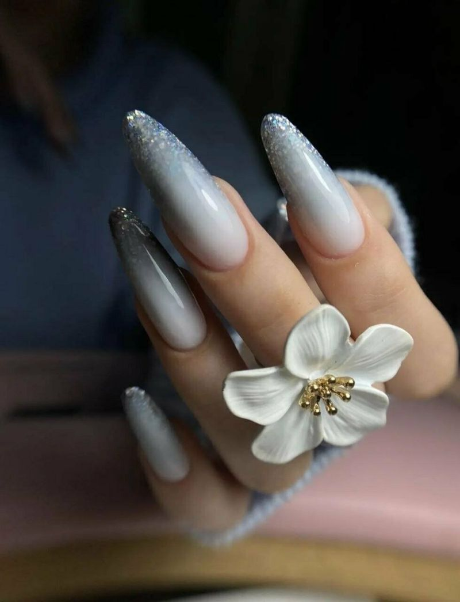
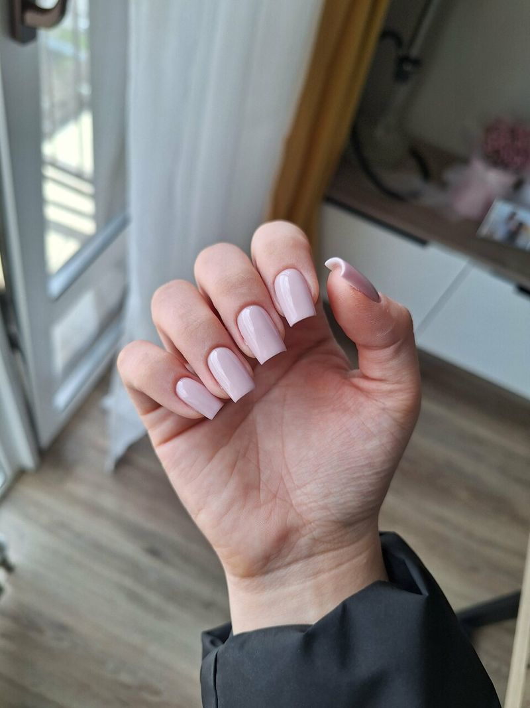
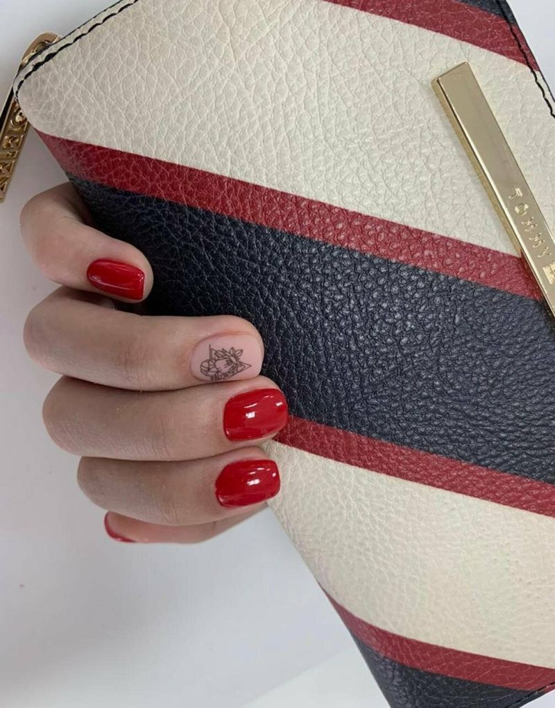

Ростов-на-Дону, Гарнизонный пер., 1А
Маникюр и педикюр в Советском районе
Ногтевая студия и салон красоты: гель-лак, наращивание, артдизайн, брови. Женский, мужской и детский маникюр, запись по телефону.



Студия во дворе дома на Гарнизонном
Ногтевая студия и салон красоты в Советском районе Ростова-на-Дону, Гарнизонный пер., 1А (во дворе дома). Маникюр, педикюр, наращивание ногтей, артдизайн, брови, удаление пушка на лице; женский, мужской и детский маникюр, spa- и аппаратный маникюр. Предварительная запись, оплата картой, Wi-Fi, парковка, разрешено с собаками до 35 см.
- Предварительная запись
- Оплата картой
- Wi-Fi
- Парковка
- Можно с собаками до 35 см
Услуги
Стоимость уточняйте у мастера по телефону.
Маникюр и уход за ногтями
- Мужской маникюр
- Маникюр комбинированный
- Маникюр + покрытие гель-лак
- Покрытие лаком + закрепитель
- Маникюр P.Shine (японский маникюр)/IBX
- Детский маникюр (до 12 лет)
- Укрепление ногтей акриловой пудрой/ликвид
- Снятие гель-лака / снятие нарощенных ногтей
- Витаминное бондирование ногтей
Педикюр
- Педикюр
Брови и лицо
- Брови
- Удаление пушка на лице
Работы мастеров
Фотографии маникюра и педикюра из карточки студии на Яндекс Картах.
Как нас найти
- Адрес
- Гарнизонный пер., 1А, Ростов-на-Дону
- Телефон
- 8 (900) 130-02-31
- Режим работы
- Уточняйте по телефону